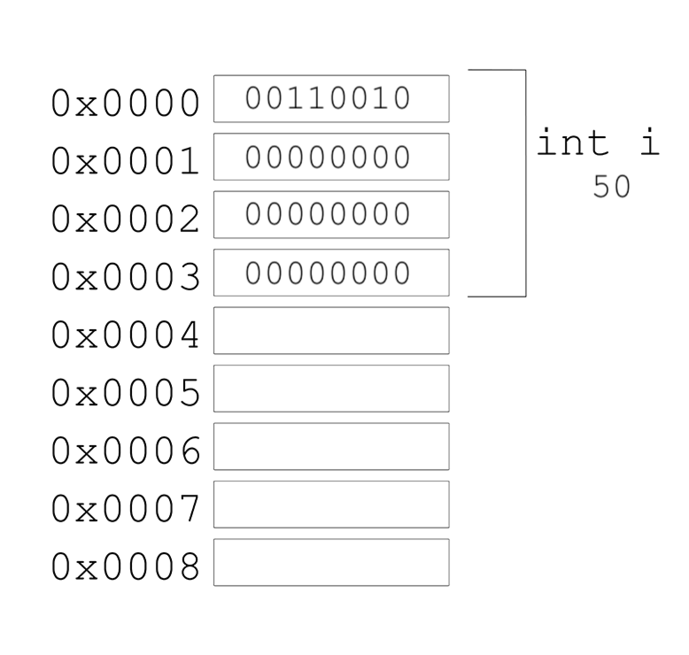
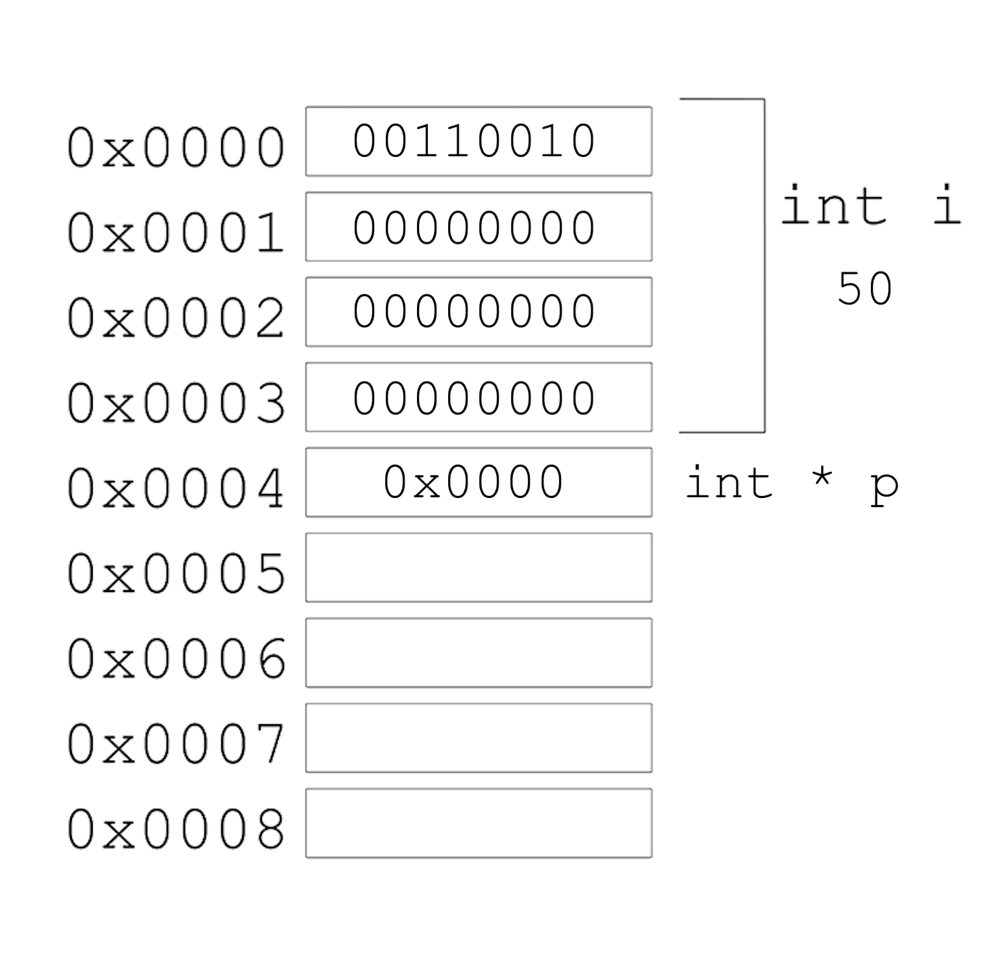

C Tutorial#
Author: Rami Nasser (raminass@gmail.com)
This notebook, reviews important topics in C with examples.
Compiling#
Computers only understand binary, which is also used to represent instructions like printing something to the screen. Our source code has been written in characters we can read, but it needs to be compiled: converted to machine code, patterns of zeros and ones that our computer can directly understand.
A program called a compiler will take source code as input and produce machine code as output. This program is gcc.
To run our program, we’ll type in another command, ./hello, which looks in the current folder ‘.’ for a program called hello, and runs it.
#include <stdio.h>
int main(void)
{
printf("hello, world");
}
gcc hello.c
This will give executable file called a.out. We can change the name of the exec file, usin -o option:
gcc hello.c -o hello_world
In order to view the assembly code in human readable way:
gcc –S hello.c
This will give a file with type *.s that is a readable Assembly code.
.file "hello.c"
.section .rodata
.LC0:
.string "hello, world"
.text
.globl main
.type main, @function
main:
.LFB0:
.cfi_startproc
pushq %rbp
.cfi_def_cfa_offset 16
.cfi_offset 6, -16
movq %rsp, %rbp
.cfi_def_cfa_register 6
movl $.LC0, %edi
movl $0, %eax
call printf
popq %rbp
.cfi_def_cfa 7, 8
ret
.cfi_endproc
.LFE0:
.size main, .-main
.ident "GCC: (Ubuntu 4.8.2-19ubuntu1) 4.8.2"
.section .note.GNU-stack,"",@progbits
Debugging#
Manual using CMD#
Simple factorial program, that has some bugs.
#include <stdio.h>
int main()
{
int i, num, j;
printf("Enter the number: ");
scanf("%d", &num );
for(i=1; i<num; i++)
j=j*i;
printf("The factorial of %d is %d\n",num,j);
}
1.Running the program#
Let’s test the program for example with input = 3
gcc factorial.c
./a.out
Enter the number: 3
The factorial of 3 is 65534
The output is incorrect as we expect the answer to be 6 for input=3. Let’s find the bug and fix the program. Next are the steps for debugging C program manually using CMD.
2.Compile the C program#
With regular compiler by adding debugging option -g
gcc -g factorial.c -o factorial
3.Launch gdb#
gdb factorial
(gdb)
4.Set up a break points inside C program#
(gdb) break 10
Breakpoint 1 at 0x763: file factorial.c, line 10.
5.Run the C program in gdb debugger#
(gdb) run [args]
Starting program: .../factorial
Enter the number: 3
Once you executed the C program, it would execute until the first break point, and give you the prompt for debugging.
Breakpoint 1, main () at factorial.c:10
10 j=j*i;
6.Printing the variable values inside gdb debugger#
Now we can use various gdb commands to debug the C program as explained in the sections below.
(gdb) print i
$1 = 1
(gdb) print j
$2 = 32767
(gdb) print num
$3 = 3
As you see above, in the factorial.c, we have not initialized the variable j. So, it gets garbage value resulting in a big numbers as factorial values.
Fix this issue by initializing variable j with 1, compile the C program and execute it again.
Even after this fix there seems to be some problem in the factorial.c program, as it still gives wrong factorial value.
So, place the break point in 10th line, and continue as explained in the next section.
Fixing the Code, attempt 1#
# include <stdio.h>
int main()
{
int i, num, j=1; // initialized j
printf ("Enter the number: ");
scanf ("%d", &num );
for (i=1; i<num; i++)
j=j*i;
printf("The factorial of %d is %d\n",num,j);
}
Checking first attempt of fixing:#
gcc factorial.c -o factorial
./factorial
Enter the number: 3
The factorial of 3 is 2
7. Continue, stepping over/in – gdb commands#
There are three kind of gdb operations you can choose when the program stops at a break point. They are continuing until the next break point, stepping in, or stepping over the next program lines.
c or continue: Debugger will continue executing until the next break point.
n or next: Debugger will execute the next line as single instruction.
s or step: Same as next, but does not treats function as a single instruction, instead goes into the function and executes it line by line.
Fixing the code, attempt 2#
By continuing or stepping through you could have found that the issue is because we have not used the <= in the ‘for loop’ condition checking. So changing that from < to <= will solve the issue.
#include <stdio.h>
int main()
{
int i, num, j = 1;
printf("Enter the number: ");
scanf("%d", &num);
for (i = 1; i < =num; i++)
j = j * i;
printf("The factorial of %d is %d\n", num, j);
}
gdb command shortcuts#
Use following shortcuts for most of the frequent gdb operations.
l - list
p - print
c - continue
s - step
quit - Exit from GDB.
ENTER: pressing enter key would execute the previously executed command again.
For more info please refer to:
man gdb
IDE Debugging#
We can graphically debug using ide, in our case VScode:
click left to the line to place the breakpoints
click ‘Start Debugging’
use the the top bar with debugging commands
More info: VScode Debugging
Memory#
Addresses, pointers#
You have seen in the lectures how to allocate memory for different data structures.
Computer’s memory is represented in hexadecimal base, which represents large numeric values with fewer digits needed.
![image.png]()
When creating variable n:
#include <stdio.h>
int main(void)
{
int n = 50;
printf("%i\n", n);
}

A pointer is a variable that stores an address in memory, where some other variable might be stored.
The & operator can be used to get the address of some variable, as with &n. And the * operator declares a variable as a pointer, as with int *p, indicating that we have a variable called p that points to an int. So, to store the address of a variable n into a pointer p, we would write.
With C, we can also go to specific addresses in memory, which might cause segmentation faults, where we’ve tried to read or write to memory we don’t have permission to.
#include <stdio.h>
int main(void)
{
int n = 50;
int *p = &n;
printf("%p\n", p);
printf("%i\n", *p);
}
0x7ffe86df0bd4
50
In memory, we might have one variable, p, with the value of some address, like 0x123, stored, and another variable, an integer with the value 50, at that addresss:

Notice that p takes up 8 bytes, since in modern computer systems, 64 bits are used in order to address the billions of bytes of memory available. With 32 bits, we can only count up to about 4 billion bytes, or about 4GB of memory.
run the below to see thehow many bits the machine uses to represent addresses:
uname -a
Strings, Arrays#
#include <stdio.h>
int main(void)
{
char *s = "HI!";
printf("%p\n", s);
printf("%p\n", &s[0]);
printf("%p\n", &s[1]);
printf("%p\n", &s[2]);
printf("%p\n", &s[3]);
}
The address of each character in s
nova 45% gcc strings.c -o strings
nova 46% ./strings
0x400644
0x400644
0x400645
0x400646
0x400647
The address of the first character, &s[0], is the same as the value of s. And each following character has an address that is one byte higher.
Pointer arithmetic#
#include <stdio.h>
int main(void)
{
char *s = "HI!";
printf("%c\n", *s);
printf("%c\n", *(s + 1));
printf("%c\n", *(s + 2));
}
*s goes to the address stored in s, and *(s + 1) goes to the location in memory with the next character, an address that is one byte higher.
#include <stdio.h>
int main(void)
{
int numbers[] = {4, 6, 8, 2, 7, 5, 0};
printf("%i\n", *numbers);
printf("%i\n", *(numbers + 1));
printf("%i\n", *(numbers + 2));
printf("%i\n", *(numbers + 3));
printf("%i\n", *(numbers + 4));
printf("%i\n", *(numbers + 5));
printf("%i\n", *(numbers + 6));
}
It turns out that we only need to add 1 to the address of numbers, instead of 4 (even though ints are 4 bytes in size), since the compiler already knows that the type of each value in numbers is 4 bytes. With + 1, we’re telling the compiler to move the next value in the array, not the next byte.
Valgrind#
We use malloc to allocate memory, and we use free to free the memory so the operating system can do something else with it.
Our computers might slow down if a program we’re running has a bug where it allocates more and more memory but never frees it. The operating system will take longer and longer to find enough available memory for our program.
Example:
#include <stdio.h>
#include <stdlib.h>
int main(void)
{
int *x = malloc(3 * sizeof(int));
x[1] = 72;
x[2] = 73;
x[3] = 33;
}
Compile and run the program:
gcc memory.c -o memory
./memory
We used malloc to allocate memory for 3 integers.
We’ve deliberately made a mistake where we forgot arrays are 0-indexed, and started at x[1] instead. Then, with x[3], we’re trying to access memory beyond the bounds of what we have access to.
We also don’t free the memory we’ve allocated.
When we compile and run our program, though, nothing seems to happen. It turns out that our mistake wasn’t bad enough to cause a segmentation fault this time, though it might next time.
We will use valgrind, a command-line tool that we can use to run our program and see if it has any memory-related issues.
How ? run valgrind followed by the executable of the program as follow:
gcc -g memory.c -o memory
valgrind ./memory
==2141== Memcheck, a memory error detector
==2141== Copyright (C) 2002-2013, and GNU GPL'd, by Julian Seward et al.
==2141== Using Valgrind-3.10.0.SVN and LibVEX; rerun with -h for copyright info
==2141== Command: ./a.out
==2141==
==2141== Invalid write of size 4
==2141== at 0x400567: main (memory.c:9)
==2141== Address 0x51fd04c is 0 bytes after a block of size 12 alloc'd
==2141== at 0x4C2AB80: malloc (in /usr/lib/valgrind/vgpreload_memcheck-amd64-linux.so)
==2141== by 0x40053E: main (memory.c:6)
==2141==
==2141==
==2141== HEAP SUMMARY:
==2141== in use at exit: 12 bytes in 1 blocks
==2141== total heap usage: 1 allocs, 0 frees, 12 bytes allocated
==2141==
==2141== LEAK SUMMARY:
==2141== definitely lost: 12 bytes in 1 blocks
==2141== indirectly lost: 0 bytes in 0 blocks
==2141== possibly lost: 0 bytes in 0 blocks
==2141== still reachable: 0 bytes in 0 blocks
==2141== suppressed: 0 bytes in 0 blocks
==2141== Rerun with --leak-check=full to see details of leaked memory
==2141==
==2141== For counts of detected and suppressed errors, rerun with: -v
==2141== ERROR SUMMARY: 1 errors from 1 contexts (suppressed: 0 from 0)
We see some snippets like Invalid write of size 4 at … memory.c:9, which gives us a hint to look at line 9, where we’re using x[3].
Another error telling us 12 bytes … are definitely lost, in that we’ve allocated them, but not freed them.
Now fixing both errors
#include <stdio.h>
#include <stdlib.h>
int main(void)
{
int *x = malloc(3 * sizeof(int));
x[0] = 72;
x[1] = 73;
x[2] = 33;
free(x);
}
% gcc -g memory.c -o memory
% valgrind ./memory
==2743== Memcheck, a memory error detector
==2743== Copyright (C) 2002-2013, and GNU GPL'd, by Julian Seward et al.
==2743== Using Valgrind-3.10.0.SVN and LibVEX; rerun with -h for copyright info
==2743== Command: ./memory
==2743==
==2743==
==2743== HEAP SUMMARY:
==2743== in use at exit: 0 bytes in 0 blocks
==2743== total heap usage: 1 allocs, 1 frees, 12 bytes allocated
==2743==
==2743== All heap blocks were freed -- no leaks are possible
==2743==
==2743== For counts of detected and suppressed errors, rerun with: -v
==2743== ERROR SUMMARY: 0 errors from 0 contexts (suppressed: 0 from 0)
For more info see:
man valgrin
In order to view the leaks in details add the –leak-check=full option to valgrind, example:
% valgrind --leak-check=full ./memory
==3052== Memcheck, a memory error detector
==3052== Copyright (C) 2002-2013, and GNU GPL'd, by Julian Seward et al.
==3052== Using Valgrind-3.10.0.SVN and LibVEX; rerun with -h for copyright info
==3052== Command: ./memory
==3052==
==3052== Invalid write of size 4
==3052== at 0x400567: main (memory.c:9)
==3052== Address 0x51fd04c is 0 bytes after a block of size 12 alloc'd
==3052== at 0x4C2AB80: malloc (in /usr/lib/valgrind/vgpreload_memcheck-amd64-linux.so)
==3052== by 0x40053E: main (memory.c:6)
==3052==
==3052==
==3052== HEAP SUMMARY:
==3052== in use at exit: 12 bytes in 1 blocks
==3052== total heap usage: 1 allocs, 0 frees, 12 bytes allocated
==3052==
==3052== 12 bytes in 1 blocks are definitely lost in loss record 1 of 1
==3052== at 0x4C2AB80: malloc (in /usr/lib/valgrind/vgpreload_memcheck-amd64-linux.so)
==3052== by 0x40053E: main (memory.c:6)
==3052==
==3052== LEAK SUMMARY:
==3052== definitely lost: 12 bytes in 1 blocks
==3052== indirectly lost: 0 bytes in 0 blocks
==3052== possibly lost: 0 bytes in 0 blocks
==3052== still reachable: 0 bytes in 0 blocks
==3052== suppressed: 0 bytes in 0 blocks
==3052==
==3052== For counts of detected and suppressed errors, rerun with: -v
==3052== ERROR SUMMARY: 2 errors from 2 contexts (suppressed: 0 from 0)
Segmentation Fault#
Popular error programmers encounter, when trying to read/write to memory that we don’t have access to.
#include <stdio.h>
int main(void)
{
int *p = NULL;
*p = 51;
}
Can be tracked using valgrind.
Command-line arguments#
Programs of our own can also take in command-line arguments, or inputs given to our program in the command we use to run it.
We can change what our main function to no longer take in void, or no arguments, and instead:
#include <stdio.h>
int main(int argc, char *argv[])
{
...
}
argc and argv are two variables that our main function will now get automatically when our program is run from the command line.
argc Is the number of arguments provided to main when called from cmd. argv argument vector (or argument list), is an array of the arguments provided to main, the first argument, argv[0], is the name of our program.
#include <stdio.h>
int main(int argc, char *argv[])
{
printf("hello, %s\n", argv[0]);
}
We should make sure that we have the right number of arguments before we try to print something that isn’t there:
#include <stdio.h>
int main(int argc, char *argv[])
{
if (argc == 2)
{
printf("hello, %s\n", argv[1]);
}
else
{
printf("hello, world\n");
}
}
Suppose we want to write a program that accepts two command line arguments and prints their sums:
atoi#
#include <stdio.h>
#include <stdlib.h>
int main (int argc, char *argv[]) {
int a, b;
if (argc != 3) {
fprintf (stderr, "wrong number of arguments!\n");
exit (1);
}
a = atoi (argv[1]);
b = atoi (argv[2]);
printf ("%i\n", a + b);
exit (0);
}
The two calls to atoi convert the strings argv[1] and argv[2] to integers. atoi stands for “ASCII to integer.”
What happen when the argument is not integer ?
Read Data#
Next lessons you will see how to read/write to files in C.
Now, we will see and alternative way to working with files which you will use in your HW1.
Example Input
8.1402,-5.8022,-7.2376
10.1626,-7.4824,-6.5774
9.3153,-5.4974,-6.7025
9.7950,-5.2550,-9.1757
7.9095,-6.6488,-7.6088
The data we need to read is 2d matrix, if we know the size of it ahead of reading, this can be solved with instantiating a sta2d array.
But, what if we don’t know the size before reading ?
Answer: dynamic memory allocation.
How? Answer: We will show an option with 2d linked list.
This is just one option and is not mandatory, you can read the data in different ways.
#include <stdio.h>
#include <stdlib.h>
struct cord
{
double value;
struct cord *next;
};
struct vector
{
struct vector *next;
struct cord *cords;
};
int main(int argc, char **argv)
{
struct vector *head_vec, *curr_vec, *next_vec;
struct cord *head_cord, *curr_cord, *next_cord;
int i, j, rows = 0, cols;
double n;
char c;
head_cord = malloc(sizeof(struct cord));
curr_cord = head_cord;
curr_cord->next = NULL;
head_vec = malloc(sizeof(struct vector));
curr_vec = head_vec;
curr_vec->next = NULL;
while (scanf("%lf%c", &n, &c) == 2)
{
if (c == '\n')
{
curr_cord->value = n;
curr_vec->cords = head_cord;
curr_vec->next = malloc(sizeof(struct vector));
curr_vec = curr_vec->next;
curr_vec->next = NULL;
head_cord = malloc(sizeof(struct cord));
curr_cord = head_cord;
curr_cord->next = NULL;
continue;
}
curr_cord->value = n;
curr_cord->next = malloc(sizeof(struct cord));
curr_cord = curr_cord->next;
curr_cord->next = NULL;
}
...
// free memory
}
HW1#
Kmeans Clustering.
Fun Topic#
Memory imprecision#
%%writefile imprecision.c
#include <stdio.h>
int main(void)
{
float x = 1;
float y = 10;
printf("%.50f\n", x / y);
}
Overwriting imprecision.c
!gcc imprecision.c -o imp
!./imp
0.10000000149011611938476562500000000000000000000000
It turns out that this is called floating-point imprecision, where we don’t have enough bits to store all possible values. With a finite number of bits for a float, we can’t represent all possible real numbers (of which there are an infinite number of), so the computer has to store the closest value it can. And this can lead to problems where even small differences in value add up, unless the programmer uses some other way to represent decimal values as accurately as needed.
More detailed explanation in the below video.
#@title
from IPython.display import HTML
HTML('<iframe width="560" height="315" src="https://www.youtube.com/embed/wPBjd-vb9eI" frameborder="0" allow="accelerometer; autoplay; encrypted-media; gyroscope; picture-in-picture" allowfullscreen></iframe>')
/Users/raminasser/anaconda3/envs/software_project/lib/python3.9/site-packages/IPython/core/display.py:431: UserWarning: Consider using IPython.display.IFrame instead
warnings.warn("Consider using IPython.display.IFrame instead")